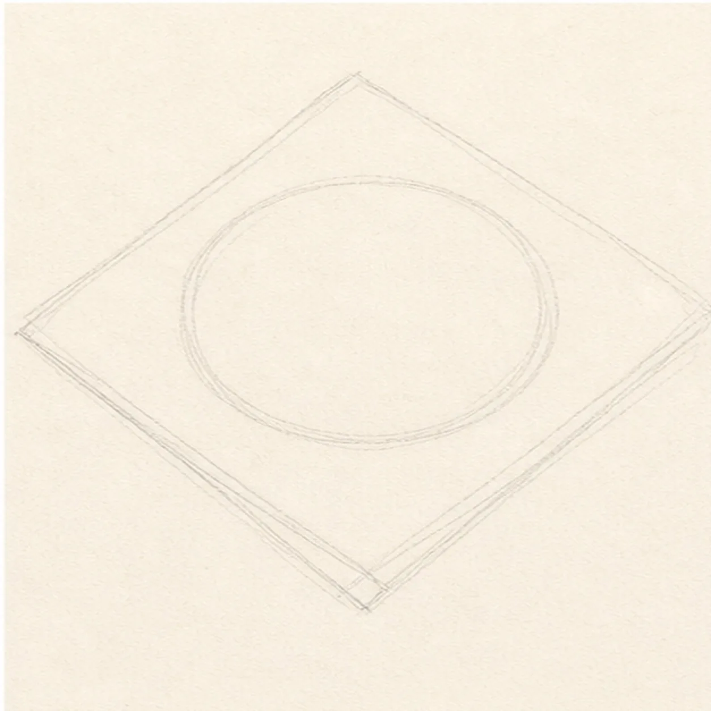
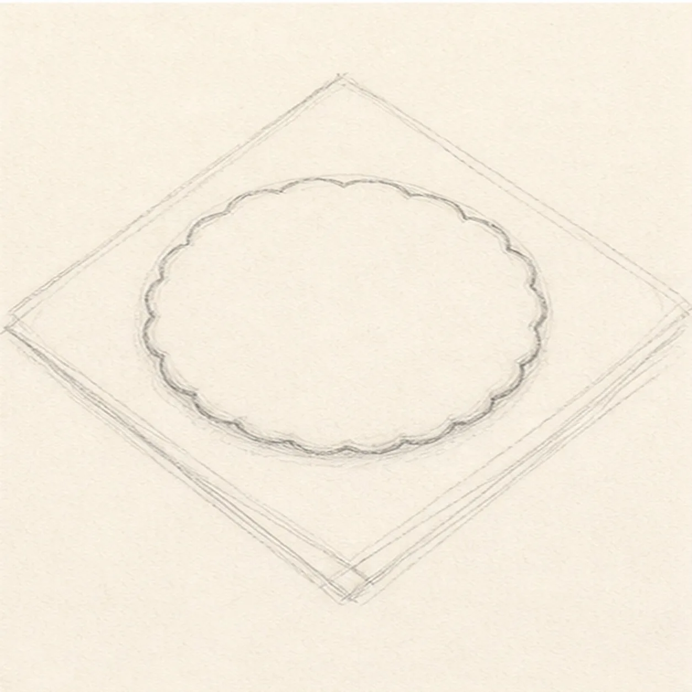
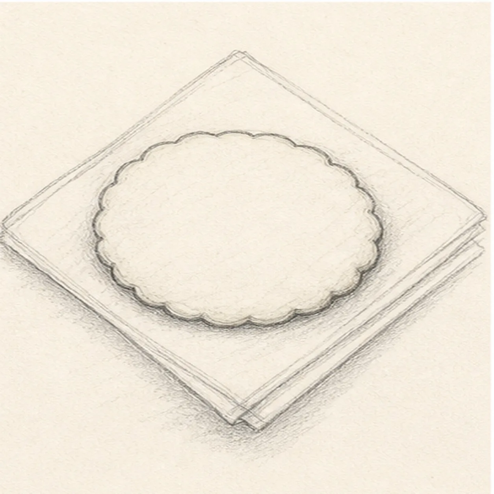
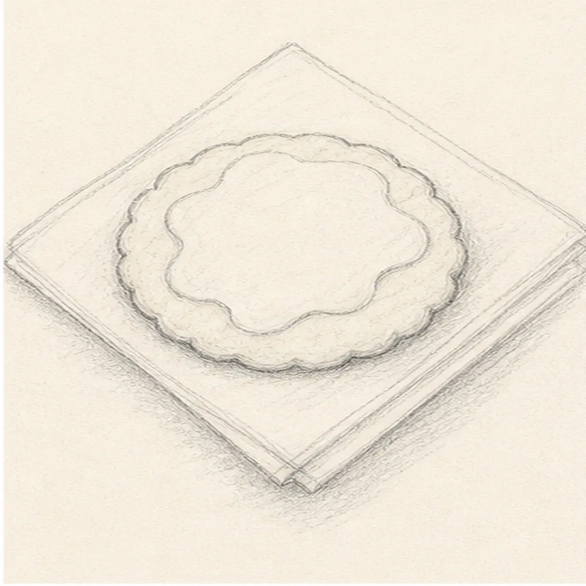
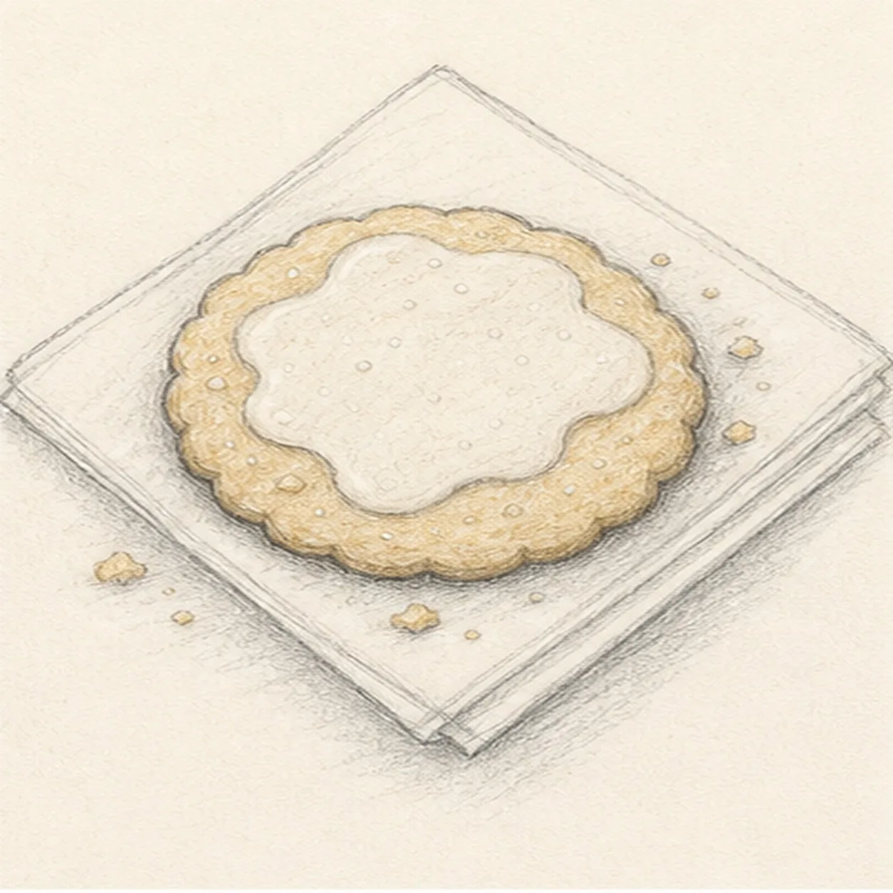

From the archive
Let's draw a sugar cookie on a napkin
Treat this as one small practice round: build the subject lightly, notice the shapes, then darken only the lines that help the finished sketch.
-
01

Place the cookie and napkin
Draw a light round cookie guide on top of a simple diamond-shaped folded napkin.
Sketch tip: Keep both shapes loose. The circle can wobble a little because a real cookie is not perfectly machined.
-
02

Bump the cookie edge
Turn the smooth cookie guide into a small scalloped edge with gentle uneven bumps.
Sketch tip: Rotate the page as you work around the edge. Short curves are easier when your wrist can pull comfortably.
-
03

Fold the napkin
Add napkin fold lines and a first soft shadow under the cookie.
Sketch tip: Use the cookie edge to decide where the shadow is darkest. The napkin folds should stay lighter than the cookie outline.
-
04

Add the icing shape
Draw an irregular icing patch on top of the cookie, leaving the scalloped cookie edge visible.
Sketch tip: Make the icing shape simpler than the cookie edge. One loose blob reads better than many tiny frosting wiggles.
-
05

Sprinkle crumbs and tone
Add a few crumbs, tiny sugar dots, warm golden pencil tone, and a little more shadow under the napkin.
Sketch tip: Place crumbs unevenly instead of making a pattern. A few varied dots feel more natural than a perfect ring.
-
06
Finish the sugar cookie sketch
Darken the keeper contours, clarify the existing icing, crumbs, sugar dots, napkin folds, warm tone, and cast shadow.
Sketch tip: Stop before adding a plate or extra snacks. The cookie, icing, crumbs, and folded napkin already give the drawing a clear story.